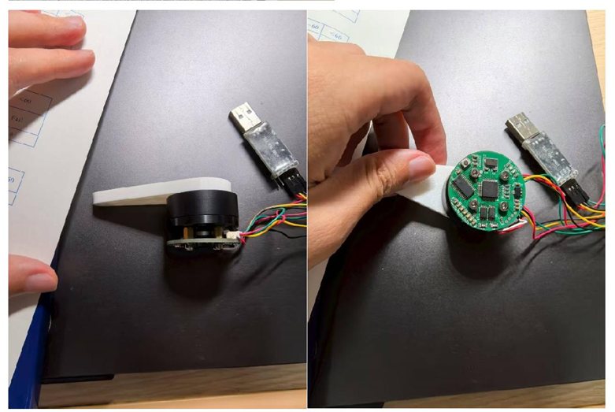
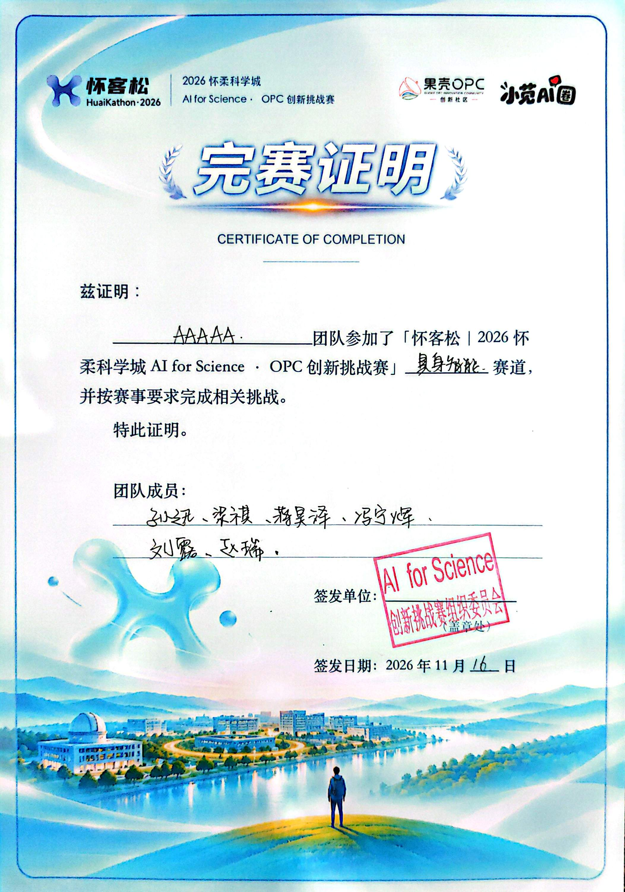
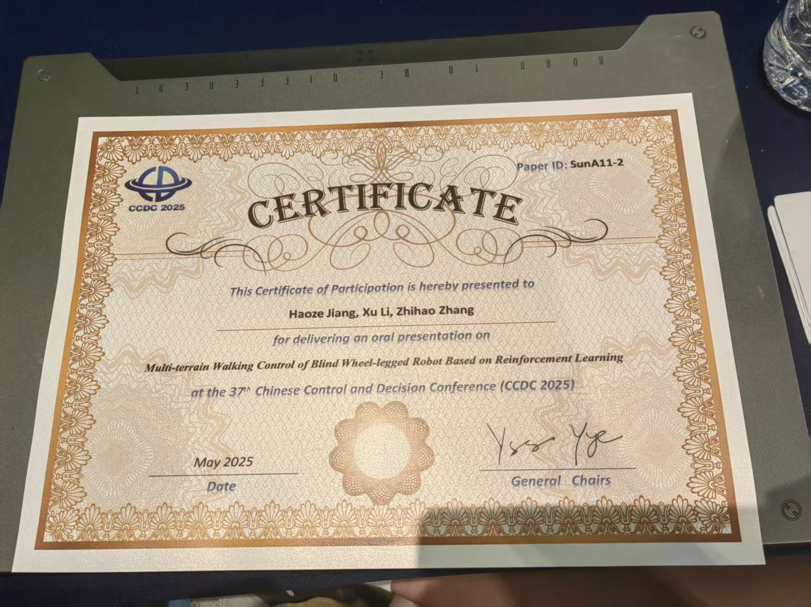

01 / EMBODIED INTELLIGENCE
危境取物 · TeleAvatar 2
一个 OK 手势触发任务，机器人完成模拟危险品抓取、洗消停留与递交。两个微调的 pi0.5 模型负责抓取和递交，规则程序协调移动、对位与状态判断。
怀客松 2026 · 具身智能赛道 · 团队 AAAAA
代码与演示 ↗你好，我是蒋昊泽。我的项目围绕机器人系统展开：从 STM32 上的 FOC 电机控制、轮腿机器人的机械与仿真模型，到具身智能模型与真机任务流程的集成。
这个主页收录了我的公开项目、实物演示与交流记录。点击项目链接，可以继续查看代码、模型和部署文档。
浏览精选项目 ↓公开整理 「危境取物」项目：手势触发、抓取、洗消与递交的完整任务链。
更新轮腿机器人模型与 STM32 FOC 项目展示，补充实物图片、演示与技术说明。
一个 OK 手势触发任务，机器人完成模拟危险品抓取、洗消停留与递交。两个微调的 pi0.5 模型负责抓取和递交，规则程序协调移动、对位与状态判断。
怀客松 2026 · 具身智能赛道 · 团队 AAAAA
代码与演示 ↗围绕轮腿机器人整理机械设计、装配体与仿真资源，提供 SolidWorks 原始文件、USD / FBX 模型及实物演示，展示结构设计与原型实现。
公开内容以模型与展示资料为主。
模型与项目详情 ↗
基于 STM32F103C8T6 与 HAL 的无刷电机控制实践，以四个独立工程串联开环、速度 / 位置闭环、电流环与三环模式切换。
包含 CubeMX 配置、Keil 工程、接线与串口调参说明。
查看工程与文档 ↗团队 AAAAA 参加具身智能赛道，按赛事要求完成挑战。完赛证明签发于 2026 年 11 月 16 日。

Multi-terrain Walking Control of Blind Wheel-legged Robot Based on Reinforcement Learning
证书署名：Haoze Jiang、Xu Li、Zhihao Zhang。第 37 届中国控制与决策会议。

欢迎通过 GitHub 交流机器人与电机控制相关问题。
访问我的 GitHub ↗